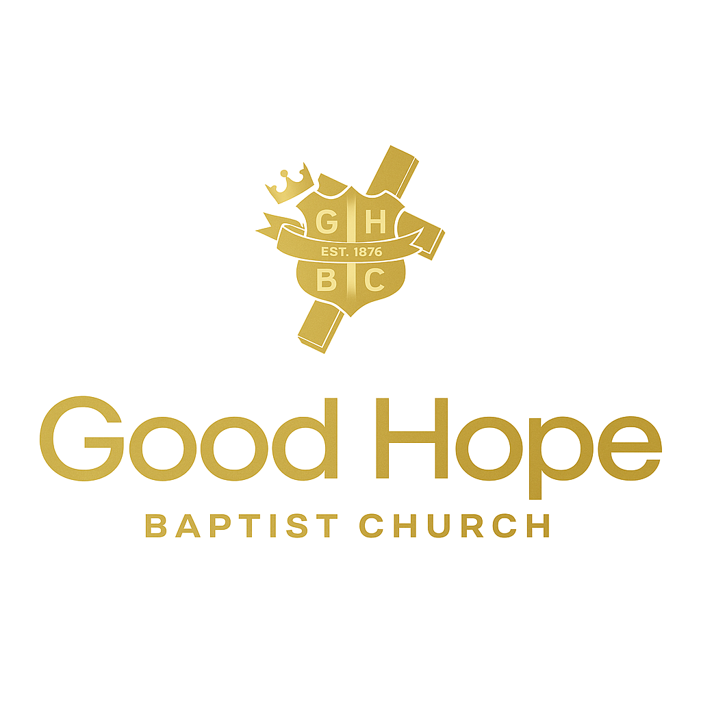

Sunday
Morning Worship
9:30 AM
We gather to worship, pray, and hear the Word of God together as a church family. Come as you are.


Westlake, Louisiana
Celebrating 150 Years
1876 — 2026
A Community of Faith Since 1876
Sundays at 9:30 AM · Wednesdays at 5:30 PM
Welcome
Whether you’re searching, returning, or simply visiting Westlake for the weekend, you’ll find a warm welcome at Good Hope. For 150 years this congregation has gathered to worship Christ, study Scripture, and love our neighbors. We’d be honored to save you a seat.
We’re a Bible-teaching, hymn-and-gospel-singing, fellowship-after-the-service kind of church. Come as you are. Bring your questions. Stay a while.
What to expect on your first visit →
Our Heritage
Established in 1876, Good Hope was born out of Mt. Zion Baptist Church in Mossville and built in the Westlake community under Reverend Henry Roy. For 150 years, this congregation has weathered storms — literal and otherwise — and remained steadfast in worship of Christ. Same Gospel. Same God. New chapter.
Debt Free. Mortgage Burned. 150 Years.
Our 150th Year
All June long we’re celebrating a century and a half of God’s faithfulness in Westlake. From fellowship nights to morning worship to our anniversary service on June 28, you’re invited to every gathering.
Anniversary Celebration
June 3 through June 28, 2026
Several weeks of worship, fellowship, and remembrance, building toward our main anniversary service.
Debt Free. Mortgage Burned. 150 Years.
A relaxed Wednesday evening of fellowship and games. Bring the family.
Guest preachers, themed Sundays, prayer walks, midweek fellowship, parade and picnic. Every gathering is open.
Guest speaker Rev. Samuel C. Tolbert. Sunday best — shades of brown with gold accents.
Gather With Us
Sunday
9:30 AM
We gather to worship, pray, and hear the Word of God together as a church family. Come as you are.
Wednesday
5:30 PM
Midweek prayer, Bible study, and time together. A good way to break up the week.
Sunday, June 28
2:00 PM
Our main anniversary service, the high point of a month of celebration.
Sunday and Wednesday service times are still being confirmed. Please call (337) 433-7403 or email goodhopebap@outlook.com to verify before your first visit.
Our Foundation
The short version of what we hold to and why we gather.
Scripture is the inspired, infallible Word of God, our highest authority for faith and daily life.
We worship one God, eternally existing as Father, Son, and Holy Spirit.
Fully God and fully man, crucified for our sin, raised on the third day, and returning in glory.
Forgiveness and new life come as a gift, received through faith in Christ alone, not by works.
A family of believers gathered for worship, baptism, the Lord’s Supper, and serving one another and the world.
We hold to the historic Christian faith as expressed in the Baptist Faith & Message.
Get Connected
There’s a place to serve and grow for every season of life at Good Hope.
Bringing the love of Christ to our Westlake neighbors — through outreach, simple acts of care, and sharing the Good News.
Servant leaders who support the pastor, care for the congregation, and help keep the church family thriving.
Women who minister alongside the deacons, offering care, hospitality, and quiet support throughout the church.
Bible study for every age, from the youngest children to adults, growing together in God’s Word.
A place for teens to grow in faith and friendship through worship, study, service, and fellowship.
Joyful, caring classrooms where kids learn that God loves them and the Bible is true.
The welcoming hands of Good Hope, helping every service run smoothly and every guest feel at home.
Choirs and musicians who lead the congregation in praise through hymns, gospel, and song.
The team behind our livestreams, sound, and online presence, helping the Gospel reach beyond the sanctuary.
Want to get involved? Reach out and we’ll help you find your place.
For Our Church Family
Already part of Good Hope — or getting there? Here’s everything in one place.
Your generosity keeps every ministry going. Give during Sunday worship, or mail your gift to the church office at 821 Sampson St., Westlake, Louisiana 70669.
Ask about givingHowever big or small — let us pray with you. Your request goes straight to the pastor.
Share a prayer requestMissed a Sunday, or worshiping from home? Catch the service on our YouTube channel.
Watch on YouTubeThis week’s announcements, order of service, and what’s coming up at Good Hope.
Request the bulletinUshers, music, media, children, missions and more — there’s a place for your gifts.
See all ministriesFollow Good Hope on Facebook for announcements, photos, and event reminders.
Follow on Facebook
Meet Our Pastor
Senior Pastor · Serving since December 2015
Pastor Tim Ceasar answered the call to Gospel Ministry in 1994 and was ordained in 1998. Before being called to Good Hope in December 2015, he served as Pastor of St. Luke Missionary Baptist Church in Lake Charles for nearly fifteen years.
He holds advanced degrees from McNeese State University and the University of Louisiana Monroe, and serves the community as a Child Welfare Supervisor with Calcasieu Parish. He and his wife Vanessa have three daughters and one granddaughter.
Beyond Good Hope, Pastor Ceasar serves as President of the Baptist Minister’s Union of Lake Charles and Vicinity, 2nd Vice President of the New Light Missionary and Educational Baptist Association, and a Founding Member of the 4-THEM Community Organization.
Reach out to Pastor Tim →We’d Love to Meet You
Walking into a church for the first time takes a little courage — here’s what to expect, so you can relax and just join us.
Come a few minutes early if you can — around 9:45 AM on Sunday — so someone can greet you and help you find a seat. Running late? That’s fine too; slip in whenever you arrive.
Come as you are. On a typical Sunday you’ll see everything from suits and Sunday dresses to slacks and nice jeans. We care that you’re here, not what you’re wearing.
Parking is available at the church on Sampson Street. If you need help finding a spot or the closest entrance, an usher will be glad to point the way.
Children are always welcome in worship. We also have Sunday School classes for every age and a caring children’s ministry — just ask an usher or greeter and we’ll help your little ones get settled.
Sunday morning worship usually runs about an hour and a half — hymns and gospel music, prayer, Scripture, and a message from God’s Word. Many stay to visit afterward, and you’re welcome to as well.
Yes. If you have specific accessibility needs (seating, hearing, mobility), let us know ahead of time at goodhopebap@outlook.com and we’ll make sure you’re taken care of.
Absolutely — join us on our YouTube channel. It’s a great way to get a feel for Good Hope before you visit in person.
Drop your info and Pastor Tim will reach out personally. We never share your details and we don’t add you to anything you didn’t ask for.
Good Hope Missionary Baptist Church
821 Sampson St.
Westlake, Louisiana 70669
(337) 433-7403
goodhopebap@outlook.com